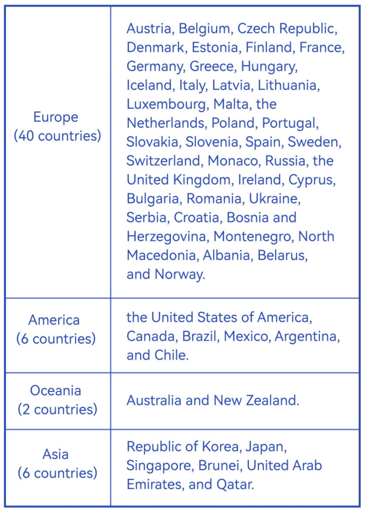

💡 Policy
🆓 Which countries' citizens are eligible for the 240-hour visa-free policy?
He/She must be a citizen of one of the countries entitled to the 240-hour visa-free transit. Please check the table below for the list of the countries entitled.

📋 What are the requirements and restrictions for entering China through the 24-hour visa-free policy?
China has implemented a 24-hour visa-free transit policy for citizens of all other countries around the world at all its accessible exit-entry ports. Foreign nationals holding valid international travel documents and connecting tickets with confirmed seats, who intend to transit via China by international flights, ships, or trains to third countries or regions, are exempt from visa applications, provided that their stay in China will not exceed 24 hours and that they will remain within the arrival ports.
Those who plan to leave the ports must apply for temporary entry permits at the exit-entry border inspection authorities of the corresponding ports.
🛂 If I am not eligible for the visa exemption policy for the time being, how can I obtain a Chinese tourist visa?
Tourist visa (L Visa) — Issued to those who intend to go to China as a tourist.
- Basic Documents
- Supporting Documents
- Application Procedure, Processing Time and Fees
- Special Reminder & Notes
👉 If you plan to apply for a Chinese visa, please visit the China Online Visa Application (COVA) website.
⚓ Which ports of entry are available?
China has numerous designated ports of entry for international travelers, including major international airports (Beijing Capital, Shanghai Pudong, Guangzhou Baiyun, etc.), seaports, and land border crossings. Please check the official immigration authority website for the latest list of eligible ports for your specific visa-free category.
🎫 What should I pay attention to if I hold a connecting ticket?
- He/She must hold a valid international travel document (valid for no less than three months) that can prove his/her nationality and identity, and meet the conditions for entering a third country/region.
- He/She must hold a connecting ticket to a third country/region with a confirmed date and seat for departure within 240 hours or relevant certificates as per the amount of time applied for the visa-free transit.
- Fill out the Arrival Card for Temporary Entry Foreigners, and accept inquiries from the entry-exit border inspection authority.
⏰ How to calculate the stay time under the 240-hour visa-free policy?
The calculation does not consider the actual time of arrival but starts counting from midnight the next day.
For Example:
- Arrival: You arrive in Beijing at 2:00 PM on Jan 1, 2025.
- Start of 240-hour period: The clock starts at 12:00 AM on Jan 2, 2025.
- End of 240-hour period: You must leave by 11:59 PM on Jan 11, 2025.
🚫 What items are restricted from being brought into the country?
- Weapons and Ammunition
- Narcotics and Psychotropic Substances
- Biological and Infectious Materials
- Animal and Plant Products
- Other Prohibited Items
🗓️ How to Get Your Chinese Visa Renewed?
After entering China, foreigners should apply for a visa renewal at the Exit & Entry Administration Office of Public Security Bureau (at county level and above), if you meet one of these 4 circumstances:
- Change the purpose of visiting and stay
- Issued a new passport (former passport will expire soon, or visa pages have been used up)
- Add companions after entry
- Group tourists need to stay in China separately
If you fail to renew your China Visa, your current visa will become invalid, requiring you to exit and return home. Bear in mind that illegal stay would be punished.
The authority will decide whether to issue a new Chinese Visa within 7 days from the date of acceptance.
📝 What are the basic requirements of China Visa Renewal?
- Your valid passport (or valid international travel documents) and Chinese Visa
- A completed Visa/Stay Permit/Residence Permit Application Form
- You can directly fill in a paper form at the office of the local police station or PSB, or download a Word/PDF version from the official website
- A recent 2-inch photo taken in the last 6 months (full face, bareheaded)
- A completed Registration Form of Temporary Residence for Visitors
- Other documents supporting your stay in China